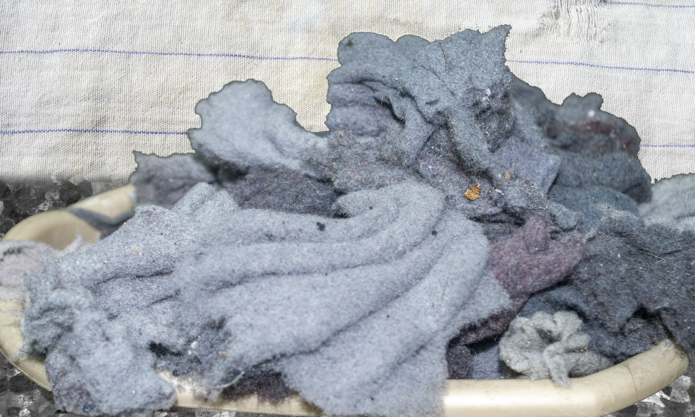

Deep in the center of Basement is the horrible landform known as the Lint Pit. This is a massive pit filled with twisted spongy structures that looks solid, but disintegrate into minute dust particles when touched. Many people have fallen into the pit, unaware of its structure, and none have been able to escape. It’s said that massive dust mites roam in the folds of the lint, and while it hasn’t been proven, rumor says that the dust it secretes is actually spores, and that the lint itself is some sort of monstrous fungus that consumes those who fall into its pit.